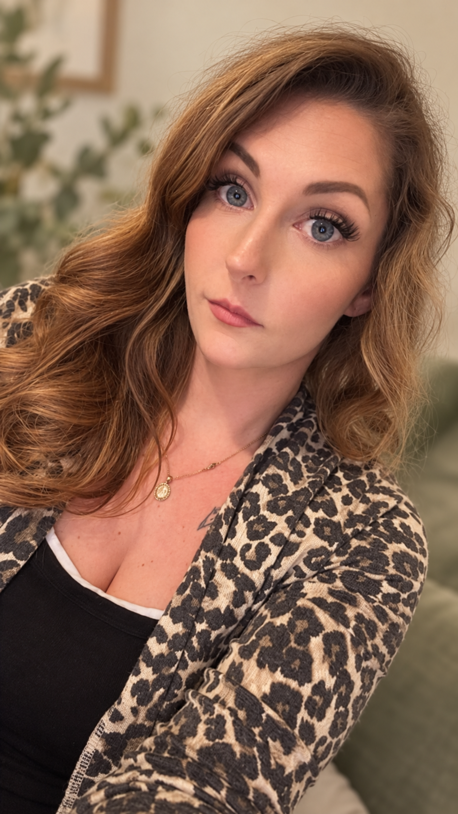

A little about the hands behind the keepsakes
Meet Taleese

Hi, I’m Taleese! I’m 34 years old and a mom to five beautiful kids.
Being a mom means wanting to be there for your children and help them grow into the best people they can be. It also means wanting to provide for your family. For a long time, I struggled to balance both.
I’d get up early, go to work, put in long hours, come home, and make dinner. By the time I sat down to eat, it was already time for the kids to bathe and get ready for bed. It was exhausting.
And when one of my kids got sick, I’d feel pulled in two directions. I felt guilty if I missed work to be there for them, and guilty if I didn’t. The stress of clocking in and out, and wondering whether taking time off might put my job at risk, started to take a toll on my mental and physical well-being.
For the first half of my kids’ lives, before they started kindergarten or pre-K, I was lucky to be a stay-at-home mom. I loved being there with them, even though I wasn’t bringing in an income at the time. Now, I want to put my work experience in marketing and my creativity to good use in a way that still lets me be present for my kids.
That’s how I came to start The Gathered Wildflower. I get to create keepsakes that help people celebrate the moments and people who matter to them—whether that’s a gift for someone special, something to remember a milestone, or a completely custom idea we bring to life together.
I want to do work I love, ease some of the stress in my life, and be the mom and partner I want to be to my kids and my fiancé. And I want to have fun creating along the way!
I hope to hear from you soon. Let’s get creative and make some fun memories and art together!
With care,
Taleese
The Gathered Wildflower